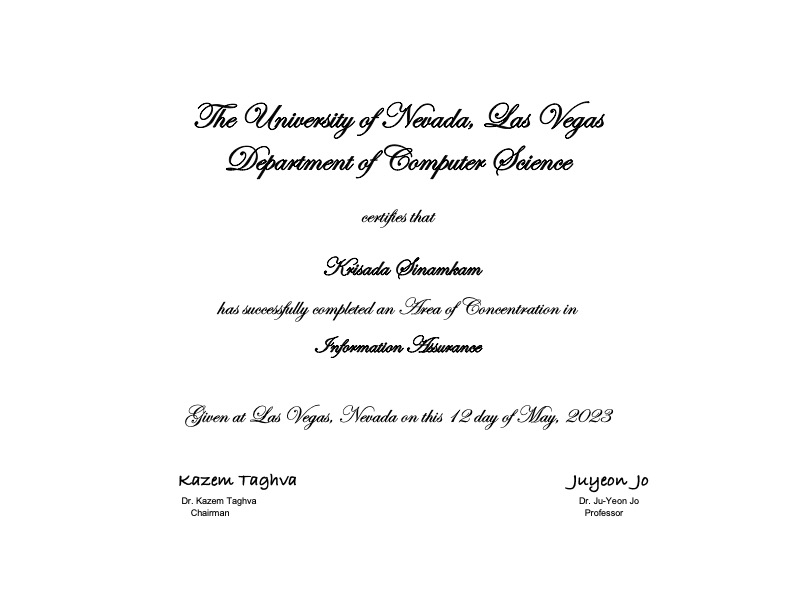
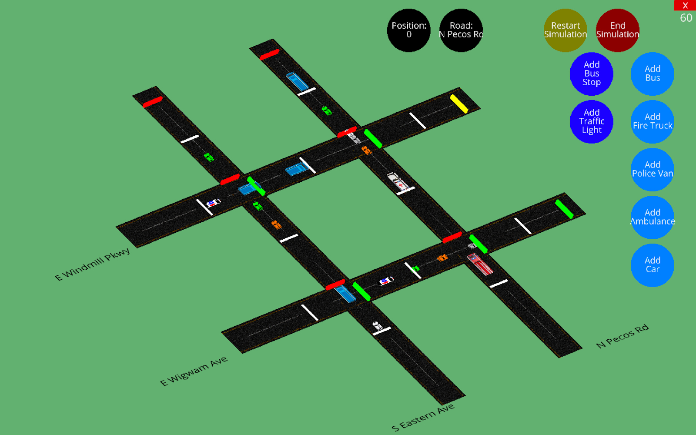

EDUCATION

CERTIFICATION
An Area of Concentration in Information Assurance
Received a certification in An Area of Concentration in Information Assurance from UNLV, which has been designated the NSA/DHS National Center of Academic Excellence (CAE) in Cyber Defense since 2019.
PROJECTS
Personal Website
HTML, CSS, JavaScript, Python, AWS, RestAPI
• Developed a responsive website using HTML, CSS, and JavaScript for seamless cross-device experience.
• Utilized AWS services, including Amplify for simplified development and deployment.
• Implemented AWS Lambda for precise date and time retrieval from form submissions and stored responses in DynamoDB using variables.
• Leveraged AWS DynamoDB, a fully managed NoSQL database, for storing user-submitted data from the contact form.
• Enabled seamless communication between frontend and backend using AWS API Gateway with RestAPI.
• Ensured secure access to AWS resources through fine-grained IAM controls and MFA, maintaining resource integrity and confidentiality.
A 3D Traffic Simulation for Las Vegas
Python
• Developed a 3D traffic simulation system in Python using the Ursina Engine.
• Designed a user interface for simulation control, vehicle and traffic light management.
• Implemented TrafficSystem module to read and validate data from XML files, creating schedules for virtual traffic.
• Created Moving Vehicle component to simulate accurate vehicle behavior.
• Developed Traffic Light Simulation component for realistic traffic light effects.
• Conducted extensive unit tests for simulation and vehicle calculations.
• Ensured cross-platform compatibility (Windows 11, MacOS Ventura).
• Utilized GitHub for version control and collaboration.
• References:
o GitHub Repository: github.com/ks-moss/472-2023-G3/tree/main/Traffic%20Simulation
o Video Reference: drive.google.com/file/d/131yPb6rk3fwJduPIquj9TwtwzulROgiq/view?usp=sharing
Mole Classification using K-Nearest-Neighbors Algorithm
Jupyter, Python
• Technique: Utilizing Supervised Learning Techniques
• Problem: Classify images of moles as benign or malignant using the K-Nearest-Neighbors algorithm.
• Data: 1.52 GB dataset with 1,000 images of moles, along with corresponding descriptions.
• Data Preprocessing: Adjusted contrast, brightness, and cropped images to remove rulers and enhance accuracy.
• Method Implemented: K-Nearest-Neighbors (KNN) algorithm for binary classification.
• Experiment Design: Conducted classification experiments using KNN on the 1,000 mole images.
• References:
o ISIC Archive: Used for image data collection.
o Kaggle Data: Obtained additional mole description data.
VOLUNTEER EXPERIENCE
United States Senate (Non-Profit Organization)
• Non-Profit Organization: Nevada for Warren
• Collaborated with Assemblywoman Cecelia González in community engagement and political advocacy.
• Developed interpersonal and communication skills through engaging with diverse community members.
• Assisted in organizing campaign events, including rallies, town hall meetings, and fundraising activities.
• Conducted outreach efforts to increase voter awareness and registration.
• Contributed to policy research and analysis.
• Engaged in grassroots activities like canvassing, phone banking, and volunteer recruitment.
• References:
o Supervisor: Cecelia Gonzalez
o Phone: (702) 573-8404
o Email: cecelia.gonzalez@asm.state.nv.us
SKILLS
Python
Java
C
C++
XML
Ruby
ASM
xv6
LaTex
MATHLAB
HTML
CSS
JavaScript
AWS Amplify
AWS DynamoDB
AWS API Gateway
AWS Lambda
AWS IAM